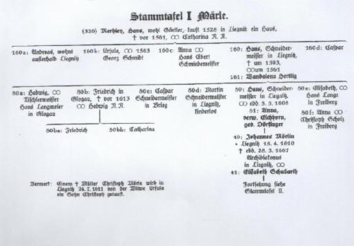
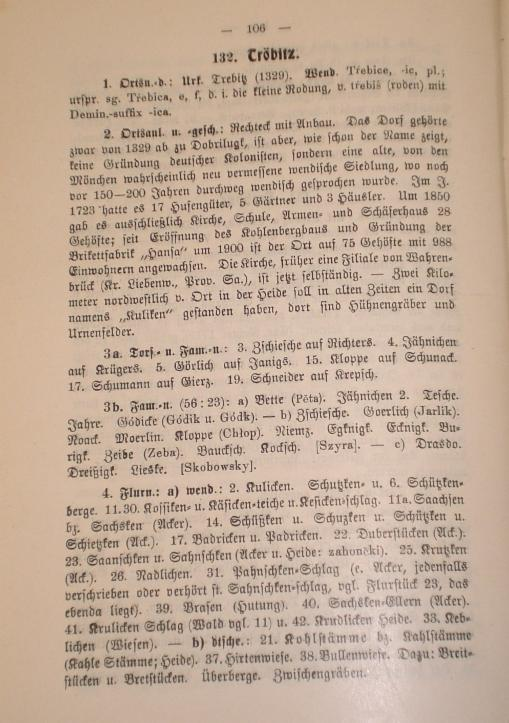

Wenn man etwas älter wird, stellt man oft sich die Frage, woher komme ich, wer sind meine Vorfahren?
Mein Vater, hat mir in meiner frühen Jugend erzählt, dass unsere Vorfahren aus Vorarlberg in Österreich stammen. Der Name soll vom Mohren abgeleitet sein - Mohr > Moerlein > Mörlin. Angeblich soll es auch ein Wappen geben mit einem Mohren darin. Wie es halt so ist, wenn man jung ist. Man nimmt das zur Kenntnis und legt es zu den Akten. 1996 haben wir Urlaub auf Malta gemacht. In den Festungsanlagen gibt es u.a. einen Shop des Historical Research Center. Dort kann man sich die Herkunft des Familiennamens suchen lassen und in einer Urkunde ausdrucken lassen. Das Ergebnis der Suche zeigte in gewisser Weise Übereinstimmung mit den Aussagen meines Vaters. Das dazugehörige Wappen zeigte aber keinen Mohren. Die Urkunde und das Wappen hängen seit dieser Zeit in unserem Haus. Weitere Nachforschungen gab es meinerseits erst mal nicht, obwohl das Thema immer irgendwie da war.Am Anfang des Jahres 2013 habe ich angefangen mich mit meinen Ahnen zu befassen. Dabei tauchte dann die Frage auf , wie lange gibt es die Mörlins in Tröbitz und wie weit können wir unsere Ahnen zurückverfolgen.
Im Ahnenpass meines Vaters ließen sich die Mörlins bis zu Johann Friedrich Mörlin , * 28.04.1741 in Skassa bei Großenhain nachweisen. Dessen Sohn, Johann Gotthelf Friedrich Mörlin gründete die Tröbitzer Sippe. Er heiratete 1819 eine Johanna Rosina Kölling aus Altherzberg und betrieb die Wassermühle in Tröbitz. Im Grundbuch von Tröbitz ist der Kauf der Wassermühle mit Nebengebäuden am 11.Sept. 1820 bestätigt. Seitdem gibt es uns in Tröbitz.
Meine Nachforschungen ergaben bisher, dass ich meine Vorfahren bis nach Liegnitz 1528 zurückverfolgen kann.
Das beruht auf vier Säulen:
Weiterhin habe ich verschiedene Informationen aus den Kirchenbüchern der betreffenden Orte gefunden.
Die Aufzeichnungen im Ahnenpass meins Vaters stimmen mit denen von Rudi Mörlin überein. Rudi Mörlin hat die Mörlin bis zur Geburt des Johannes Mörlin 1610 in Liegnitz zurückverfolgen können
Alfred Hempel hat noch weitere Informationen gefunden und datiert den ersten Mörlin in Liegnitz in das Jahr 1528. Woher die Mörlin nach Liegnitz kamen ist bisher nicht bekannt. Das Verbreitungsgebiet des Namens war bis dahin Vorarlberg, Schwaben, der Elsaß und das heutige südliche Bayern. Einige Autoren nahmen an, dass die Liegnitzer Mörlin, aus denen auch einige evangelische Pfarrergenerationen hervorgingen, mit den Reformatoren der Voralberger - Wittenberger Linie verwandt sind. Auf Grund der ersten Mörlin 1528 in Liegnitz ist das aber nicht wahrscheinlich. Jodok Mörlin ,der Begründer der Wittenberger Linie kam 1510 nach Wittenberg. Der Weg seiner Söhne ist bekannt und keiner ging nach Liegnitz. Man muß also vermuten dass der erste Mörlin in Liegnitz aus den vorher genannten Verbreitungsgebiet kommt.
Aufzeichnungen Alfred Hempel:Alfred Hempel hat in der ersten Hälfte des vorigen Jahrhunderts Familienforschung betrieben. Einer seiner Vorfahren hat 1734 in Altenburg eine Eleonore Friederike Mörlin geheiratet. Diesen Weg hat Hempel weiter verfolgt.
Er schreibt u.a.folgendes in seiner Dokumentation " Die Ahnen der Ponitzer Pfarrkinder Hempel"
"Das älteste Geschoßbuch der Stadt (Liegnitz) aus dem Jahre 1451 kennt noch keine verwandten Namensformen. Wir dürfen also mit einer Zuwanderung unbekannter Herkunft nach Liegnitz um das Jahr 1500 rechnen, denn im Liegnitzer Kontraktenbuche Nr. 973, dessen Eintragungen 1517 beginnen,stoßen wir 1528 erstmals auf einen Mörlin. Die Originalurkunden liegen im Breslauer Staatsarchiv, auszugsweise Abschriften im Liegnitzer Stadtarchiv. Sie geben mit größter Wahrscheinlichkeit folgende Generationsfolge für unsere ältesten Mörlin. Hans Merhleyn kauft im Jahre 1528 von Anna Nyerig das am kleinen Ringe gelegene Haus Nr. 105..... Er ist der älteste bekannte Mörlin in Liegnitz"Um die Erforschung der Familiengeschichte der Mörlin hat sich der am 10.04.1913 in Leipzig geborene Julius Emil Rudolf (Rudi) Mörlin seit 1936 bemüht, der auch an der Geschichte der Namensträger Mörlin bzw. Moerlin interessiert war.
Hier seine Aufzeichnungen:
Am Anfang unserer nachweisbaren Ahnenreihe steht der am 15.04.1610 geborene Johannes Mörlin. Er heiratete Elisabeth Schubarth, Tochter des Rektors Zacharias Schubarth aus Bunzlau. 1648 brannte bei einer großen Feuersbrunst in Liegnitz sein väterliches Haus in der Frauengasse ab. Für ihn ein schwerer wirtschaftlicher Verlust, der auch die Ursache seines Ortswechsels nach Lüben sein kann. Doch hat es ihn wieder in seine Heimatstadt Liegnitz gezogen, wie die in Liegnitz 1654 beurkundete Geburt seines jüngsten Sohnes beweist. Am 28.03.1667 starb er als Diakonus der Stadtkirche Liegnitz.
Außer seiner Tochter Helene, die 1664 den Magister und Conrektor Caspar Funcke in Lüben heiratete, hinterließ er 5 Söhne:
In dieser Pfarrer Generation dürfte die lateinisierte Schreibweise Moerlin begonnen haben, die auch in der Lutherzeit als Moerlinus überliefert ist. Die Weiterführung der Mörlin Stammreihe bis in die Jetztzeit begann mit dem 1652 in Lüben geborenen Johannes Friedrich. Er wurde 1680 Pfarrer in Hartha, Bezirk Leisnig und heiratete am 02.05.1682 in Colditz die Sophia,geborene Willie.
und die Töchter:
Johannes Gottfried heiratete am 28.10.1722 die Johanna Dorothea Märker. Aus dieser Ehe gingen hervor die alle in Skassa (bei Großenhain) geborenen Kinder:
Friederike, geb. 1724
Weiter in der Reihe nach Tröbitz.
Johannes Friedrich Mörlin, geb. 28.04.1741 in Skassa starb am 2.1.1822 in Zehren an der Elbe bei Meißen als Königl. Sächs. Bey-Geleits wie auch Land- und General-Accis-Einnehmer.
Er hinterließ 2 Söhne:
Johann Gotthelf Friedrich Mörlin, geb. 1786 in Zehren gest. 11.01.1855 in Tröbitz. und Johann Karl Friedrich, geb. 17.02.1788 in Katzenberg bei Nossen gest. 21.10.1887 in Wermsdorf
Johann Gotthelf Friedrich heiratete am 14.11.1819 in Altherzberg die Johanna Rosina Kölling. Johann Gotthelf Friedrich gab bei seiner Heirat als Beruf Wassermüller an. Da sein Geburtsort Zehren direkt an der Elbe liegt, hatte er vermutlich dort eine Mühle. Noch vorhanden ist in der Scheune des Mörlin'schen Anwesens in Tröbitz ein Balken mit der eingeschlagenen Inschrift:
Was dort durch Feuersflammen ward vernichtet 4.Juni 1820 27.Juni 1820 ist hier mit Gottes Hilfe wieder aufgerichtet
Von Vater zu Sohn wurde bis heute (1984) als Geschichte des Hofes in Tröbitz von Mund zu Mund berichtet: Johann Gotthelf Friedrich hatte eine Mühle gebaut, der Auftraggeber konnte jedoch nicht zahlen. Ein Interessent an der Mühle war zwar vorhanden, doch Mörlin kaufte die Mühle selbst. Aus Rache über das entgangene Geschäft hat der Interessent die zur Mühle gehörende Scheune in Brand gesteckt. Ob es sich dabei um eine in Zehren an der Elbe gelegene Wassermühle gehandelt hat, ist nicht mehr festzustellen. Wie er nach Tröbitz kam, wo er am 11.01.1855 starb, war nicht zu ermitteln.
Aus der Ehe mit Rosina Kölling gingen u.a. drei Söhne hervor.
Traugott Leberecht hinterließ ebenfalls drei Söhne:
Ewald Traugott Mörlin hinterließ einen Sohn:
Ein Sohn des 1820 geborenen Gotthelf Friedrich Mörlin - Schmied in Dobra- Julius Mörlin geb.22.03.1854 wanderte 1887 nach den USA aus. Er siedelte sich in Denver,Colorado an. Seine Nachfahren leben dort heute noch.
Mit Hilfe einer professionellen Ahnenforscherin ist es inzwischen gelungen den Eintrag der Geburt von Johannes Mörlin 1610 im Kirchenbuch der Liebfrauenkirche in Liegnitz bestätigt zu bekommen. Ebenso ist die Hochzeit seiner Eltern Hans Mörlin und Anna Dörfinger 1608 im gleichen Kirchenbuch nachgewiesen. Die Kopien der Einträge liegen mir vor.
Weiterhin gibt es Einträge im Bürgerbuch Liegnitz von 1572 welche auf verschiedene Mörlin hinweisen.
Der Ahnenforscher Alfred Hempel hat in den dreißger Jahren des vorigen Jahrhunderts seine Nachforschungen über seine Ahnen in der Publikation
veröffentlicht
Dabei gibt es eine Verbindung zu meinen Vorfahren. Alfred Hempel hat die Mörlins bis 1528 in Liegnitz zurückverfolgen können.
Die Aufzeichnungen in den Kirchenbüchern mit denen von Alfred Hempel stimmen überein. So das davon auszugehen ist, das auch die übrigen Daten von Alfred Hempel den Tatsachen entsprechen. Damit kann ich unsere Vorfahren bis 1528 in Liegnitz nachverfolgen. Bisher ist es mir nicht gelungen eine Verbindung von den Liegnitzer Mörlins zu den Jodokschen Mörlins in Vorarlberg herzustellen.
Ein Besuch im Stadtarchiv von Feldkirch in Vorarlberg sowie im Bregenzer Museum hat in dieser Beziehung sehr viele interessante Informationen und Erkenntnisse gebracht, aber keinen Nachweis der direkten Verbindung. Es kann eine direkte Auswanderung aus dem Gebiet Feldkirch gegeben haben oder aber aus dem schwäbischen oder Elsaßer Raum.
Ich würde mich freuen, wenn sich Interessierte an der Geschichte der Mörlin bei mir melden würden. Es gibt sicherlich noch viel zu entdecken und zu erfahren.
Tröbitz ist eine Gemeinde im Elbe-Elster-Kreis im Süden Brandenburgs. Zur Zeit (2014) gibt es hier 744 Einwohner.
Tröbitz wurde erstmals am 20. Dezember 1300 urkundlich erwähnt. 1329 verkaufte der Herzog Rudolf von Sachsen dem Kloster Doberlug die Dörfer "Trebitz" und "Dubrau". Wie der Name schon vermuten lässt wurde Tröbitz nicht von deutschen Kolonisten gegründet (wie ursprünglich angenommen), sondern als eine wendische Siedlung von den Mönchen neu vermessen, denn noch vor 150 bis 200 Jahren wurde nachweislich noch wendisch gesprochen.
Tröbitz war bis ins 19-te Jahrhundert ein unbedeutender Ort. Es gab ca. 20 Bauerngehöfte, eine Schmiede, eine Ziegelei, eine Wassermühle, eine Windmühle,eine Kirche und eine Schule.
1546 werden im Urbar des Klosters Dobrilugk folgende Einwohner genannt: Drewitz (Tröbitz)
1638 lesen wir im Verzeichnis der Bauernwirtschaften folgende Namen:
TABELLE
Im Receßbuch von 1860 werden folgende Interessenten an der Separation aufgeführt:
TABELLE
Im Receßbuch wird ausführlich beschrieben, welcher Interessent welche Grundstücke im Dorf bzw. welchen Acker, Wiese oder Wald zugesprochen bekam. Das waren natürlich bei den Dorfgrundstücken auch die bisherigen Besitzer. Daneben gab es auch größere Flächen , welche der Gemeinschaft gehörten. Ausgehend von diesen und anderen Unterlagen wie z.B. die alten Grundbücher kann nachvollzogen werden, welche Besitzverhältnisse auf den jeweiligen Höfen geherrscht haben. Das läßt sich bis zur heitigen Zeit verfolgen. Mit dem Beginn des Braunkohletagebaues 1899 und der Gründung der Brikettfabrik "Hansa" 1900 in Tröbitz verändert sich natürlich das Bild des Dorfes. Aus dem verträumten Bauerndorf wurde ein Industriestandort, welcher mit Einschränkungen bis heute besteht. Der Braunkohlentagebau um Tröbitz endete 1952. Die Brikettfabrik "Hansa" wurde auf verschiedene Produktionen umgestellt. Letztendlich war sie dann VEB Erntemaschinen Tröbitz.